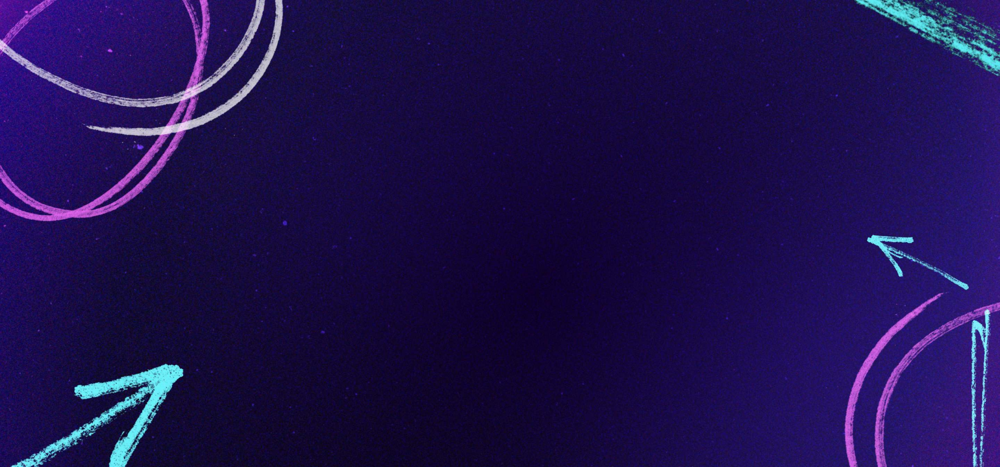
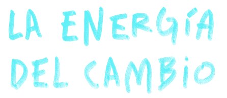
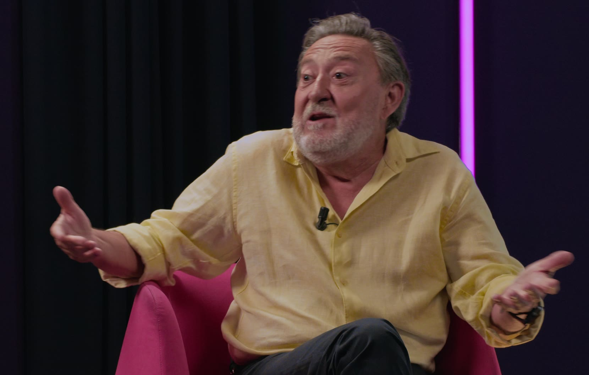
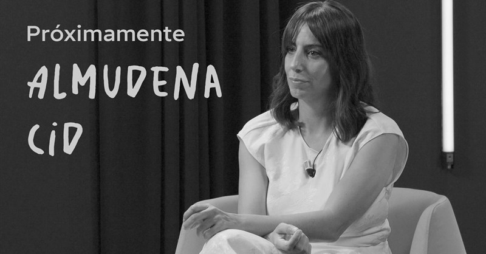
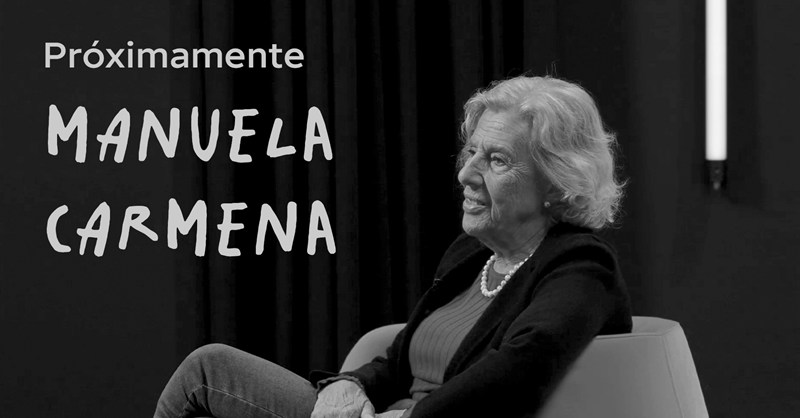
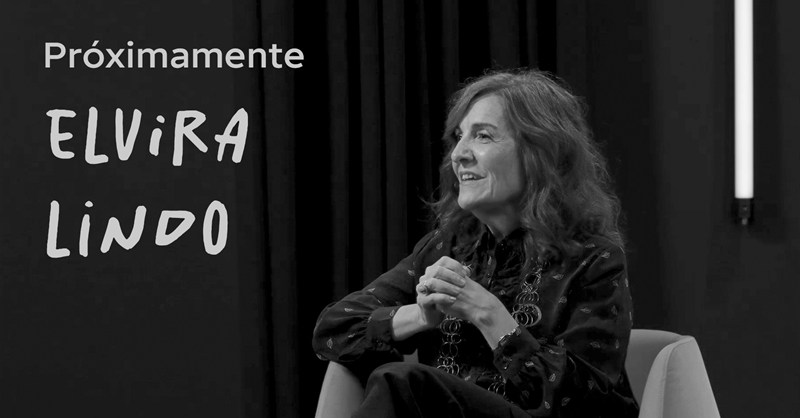
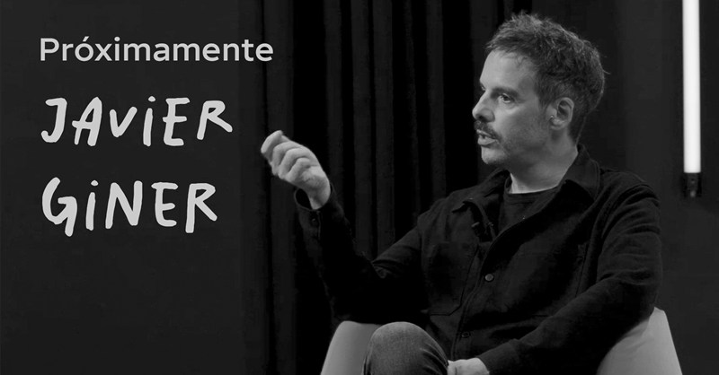
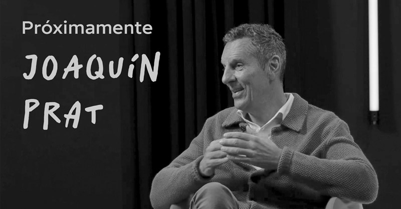

Nuevo · Episodio 02
Anabel Alonso: “Estoy buscando a propósito los papeles que nadie me daría”
La actriz repasa sus inicios, su llegada tardía a la maternidad y el precio de decir lo que piensa
Ver episodio
En colaboración con Octopus Energy

Un videopódcast con personas conocidas que un día decidieron darle la vuelta a todo, presentado por Laura Piñero
Descubre los episodiosSin filtros
La energía del cambio es un proyecto de Octopus Energy, la compañía de luz que cree que entender las cosas da poder para cambiarlas.
Nuevo · Episodio 02
La actriz repasa sus inicios, su llegada tardía a la maternidad y el precio de decir lo que piensa
Ver episodio
Episodio 01
El actor reflexiona sobre la popularidad, el oficio de actor y la vida después de Aída
Ver episodio
Episodio 03
Próximamente

Episodio 04
Próximamente

Episodio 05
Próximamente

Episodio 06
Próximamente

Episodio 07
Próximamente
Coordinación: Silvia Resola | Diseño y maquetación: Alejandra Santander | Producción audiovisual: Octopus Energy. Un proyecto de Brandslab. Godó Nexus.